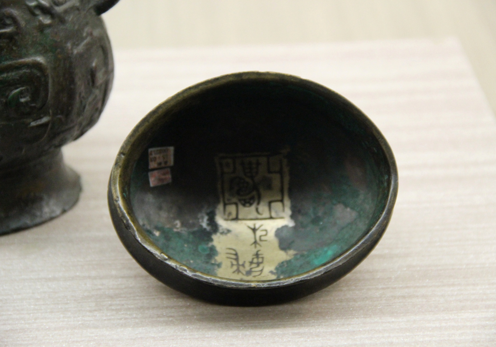
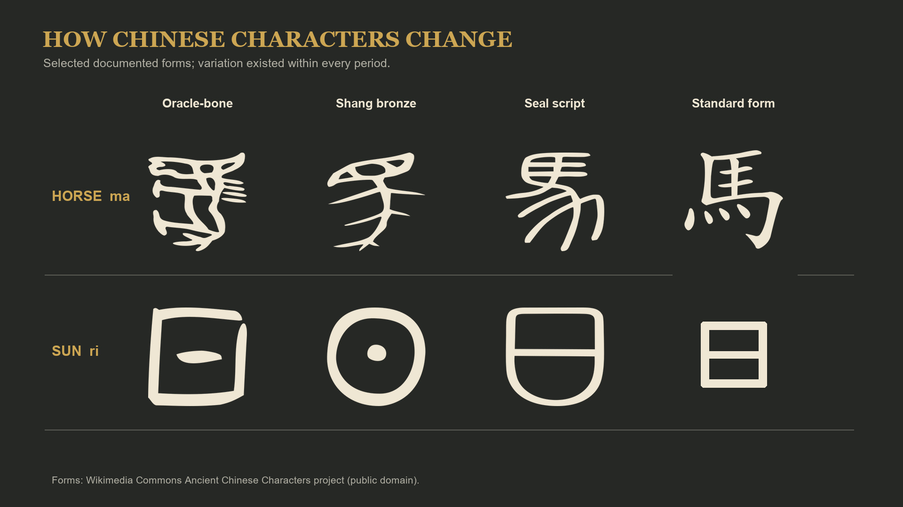
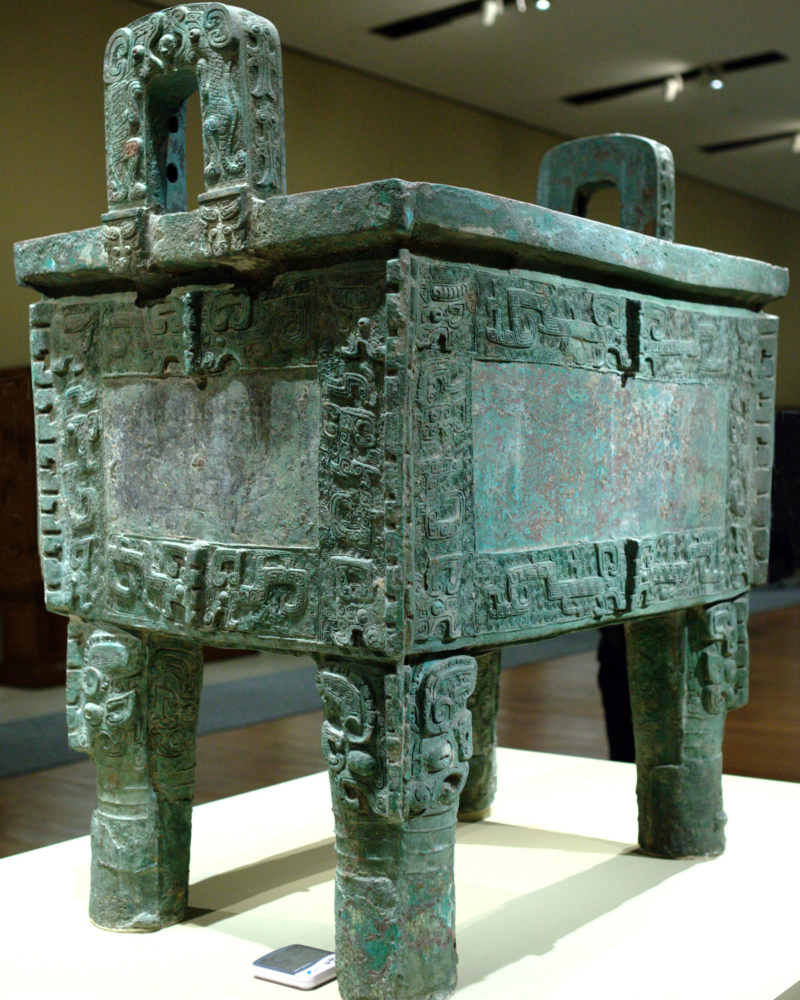
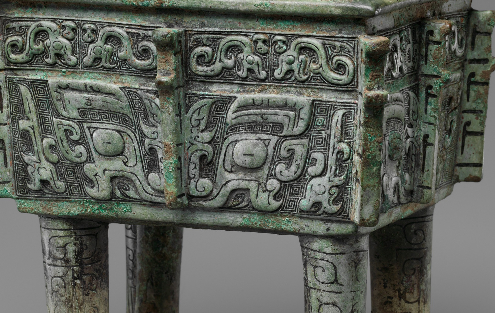
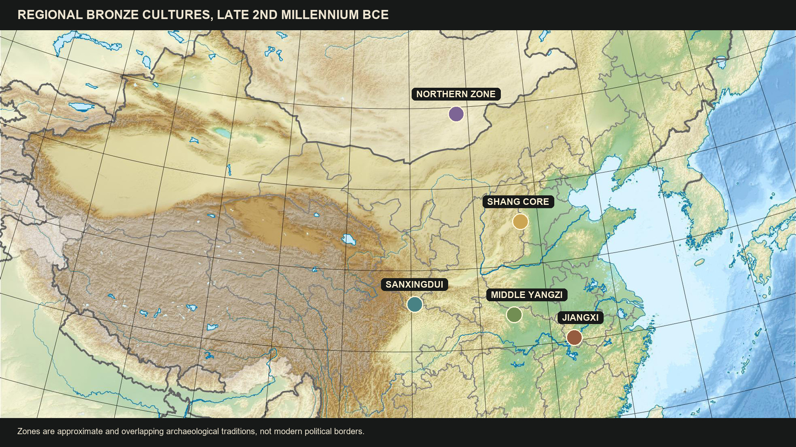
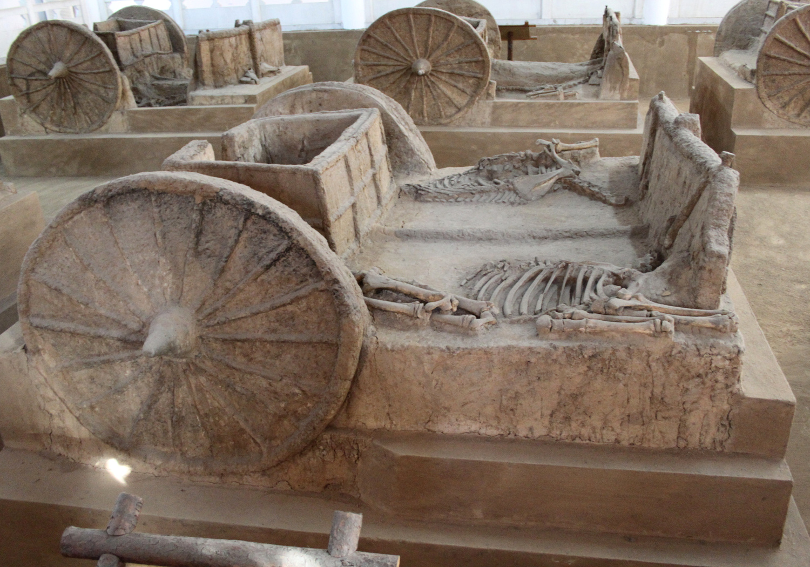

Writing, Bronze, and the Wider World — HIST 270, Chapter 1, Lecture 2
Where We're Going Today
Writing as Power (Q5–Q6)
- What the king's scribes actually recorded
- Literacy as an instrument of political control
- How a logographic script unified China across space and time
Bronze & the Wider World (Q7–Q9)
- An industry before industry — and ritual, not war
- Sanxingdui: the Bronze Age civilization nobody expected
- What crossed the steppe: chariot, horse, wheat
Two technologies that turned skill into authority — and a world bigger than the Shang.
Part I
What the records reveal about administration and control — Q5
The King's Records
- Writing fully developed by 1200 BCE — invented earlier on perishable bamboo, wood, silk
- Scribes tracked enemies slain, booty taken, tribute received, animals bagged in hunts
- Dates kept by lunar months and ten-day and sixty-day cycles

An archive in bone — the Shang state's filing cabinet
Literacy: An Ally of Political Control
- Writing let commands and reports travel across an expanding realm
- Record-keeping made tribute, campaigns, and labor countable — and collectable
- Literacy stayed restricted to elites — controlling writing meant controlling information

Words cast in metal — records meant to last forever
⏸ Pause & Reflect
In Lecture 1, only the king could speak to Di. In this lecture, only the elite could read and write.
Is restricted literacy just another monopoly of access? State your answer to Q5 as a causal claim.
Part II
How a logographic system unified China across space and time — Q6
How Chinese Characters Work
- Logographic: each character represents a word, not a sound
- Some began as pictures; others built for abstract ideas or borrowed for like-sounding words
- Most combine components — meaning element + sound element
- The cost: basic literacy takes 2,000–3,000 characters and years of study

From oracle bone pictures to modern characters — one continuous script
The Script That Held China Together
- Readers of mutually unintelligible dialects could share the same texts
- Characters stayed recognizable across centuries — educated readers reached texts from the deep past
- Korea, Japan, and Vietnam all began writing with Chinese script

The script travels: Korea, Japan, and Vietnam adopt Chinese characters
⏸ Pause & Reflect
Phonetic scripts are far easier to learn — and western Eurasia eventually abandoned its logographic systems.
Was keeping the character system worth its enormous cost in education? Who paid that cost, and who collected the benefits?
Part III
Industrial-scale production in the service of ritual — Q7
An Industry Before Industry
- Mining, refining, transporting copper, tin, and lead — plus charcoal production
- Piece-mold casting: models, ceramic molds, assembly, finishing
- Skilled artisans plus managers overseeing the whole chain

The largest surviving Shang bronze — 875 kilograms of coordinated labor
Ritual, Not War
- Shang bronze went more to ritual than to weapons
- Surviving objects are mostly vessels — cups, goblets, steamers, cauldrons for offerings to ancestors and gods
- Kings and nobles owned them — kings owned many more
- The taotie face dominates the décor — and scholars cannot agree what it means

The taotie — the face everyone recognizes and no one can explain
⏸ Pause & Reflect
Three hundred craftsmen, tons of ore and charcoal, managers and specialists — all to cast vessels for ceremonies honoring the dead.
What does it reveal about a society when its most advanced industry serves ritual? State your answer to Q7 as a causal claim.
Part IV
Other centers, other connections — Q8 and Q9
Sanxingdui: The Civilization Nobody Expected
- 1986, Sichuan: two pits of Shang date, packed with objects never seen at Shang sites
- Elephant tusks, towering bronze figures, gold-foil masks with protruding eyes — pit contents
- A walled city nearly 2 km square — abandoned around 1000 BCE, leaving no writing

A Sanxingdui bronze mask — nothing like it exists in the Shang world
Decentering the Shang
- Middle Yangzi: Shang-style bronzes with local designs — human faces, buried bells; Jiangxi tombs as rich as Shang elites'
- The Northern Zone: bronze tech closer to Central Asia and Siberia — yet they practiced oracle bone divination
- The Shang saw themselves as the center — other elites likely thought the same of themselves

A landscape of bronze cultures — the Shang were one center among several
What Crossed the Steppe
- The chariot — no wheels or animal traction in China before it: it arrived by diffusion across Asia
- The horse (domesticated far to the west) and wheat (from West Asia) came the same way
- Traffic ran both directions — Shang silk has been found in an Egyptian tomb

A chariot burial — spoked wheels that spread across Asia around 1100 BCE
⏸ Pause & Reflect
The Shang believed they were the center of the world. Sanxingdui suggests other societies may have believed the same about themselves — and left no writing to tell us.
How does evidence from outside the core change what "early China" means? State your answers to Q8 and Q9 as causal claims.
Coming Up: Lecture 3
A sacred state built on bone cracks, bronze, and the written word — destroyed in 1045 BCE by its own vassal from the west.
The Zhou conquest — and the most consequential political idea in Chinese history: the Mandate of Heaven.